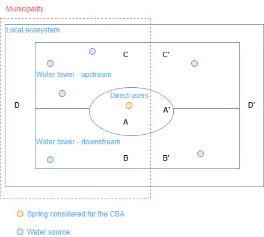
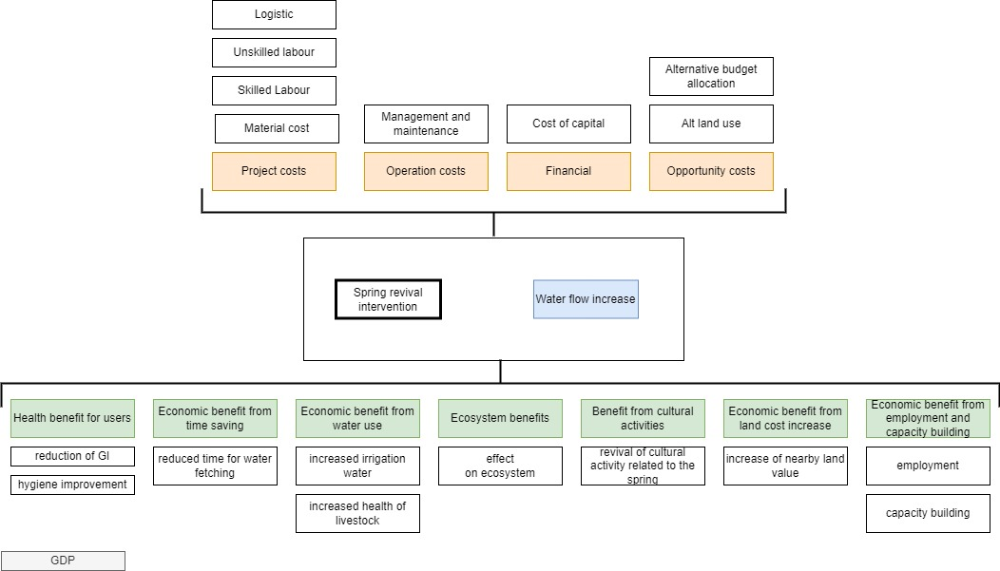

| Symbol | Benefit | Method |
|---|---|---|
| B_health | Increased water quantity improves health | From literature, get an estimate of infection reduction *DALY( and then multiply by pro-capita GDP |
| B_time | saved time for fetching and collecting water | Identify time from stakeholder conversation and valuate using pro-capita GDP |
| B_ecos | Improved ecosystem | Benefit transfer based on other studies |
| B_prod | Improved agricultural and livestock production from increase of water | Production function |
| B_impl | Employment at local level for revival activities | Expense record |
| B_land | Increased land value for presence of spring | Hedonic method |
| B_cult | Cultural benefit for revived spring | WTP for given activity |
| NA | Identification of benefits | Focus group with local stakeholder |
2 Methodology
Details on the different methodologies used in this research are given in the following sections. The economic valuation was carried applying a Cost Benefit Analysis (CBA) Spring characterization (socio-economic, hydro-geological) was done using previous publications by ICIMOD. Qualitative methods were used to identify costs and benefit by stakeholder consultations .
2.1 Cost Benefit Analysis (CBA)
Cost benefit Analysis (CBA) is “a policy assessment method that quantifies in monetary terms the value of all consequences of a policy to all members of society” (Boardman et al. 2018). It has been used for decades to support decision making. The first adoption was done in the ’30s in the united States for the construction of a dam. the essence of the tool is quite simple: it aims at measuring, in monetary terms, the benefits of an action / event versus the costs of implementing it. Often it target two specific set of problems such as the implementation of a new policy or the feasibility of a specific project. Several guidelines exist (Atkinson and Mourato 2008; Harris and Roach 2017; Boardman et al. 2018; OECD 2015; Hanley and Barbier 2009) and have been reviewed by Abelson (2020) underlying strengths, weaknesses and gaps.
While CBA has been widely used for decades, its application on environmental remediation is more recent but has been growing also due to the increasing interest in concept as ecosystem services. Mendelsohn and Olmstead (2009) and Atkinson and Mourato (2008) gives a review of economic valuation for the environment while Brauman et al. (2007) focuses on hydrological aspects and Ratnaweera, Heistad, and Navrud (2021) on water services [expand with key differences from other CBA].
For Nepal, CBA have been carried on the willingness to pay for conservation activities in Nepal (Lamsal et al. 2015), valuing environmental costs of local development (Pakhtigian and Jeuland 2019) as well as transaction costs (Adhikari and Lovett 2006), valuing ecosystem services (S. Thapa et al. 2020; Kc, Kandel, and Adhikari 2013), households preferences for time and money contribution for river restoration (Khatiwada, Bohara, and Kunwar 2023) and in Sikkim, for soil and water conservation (Mishra and Rai 2014). In the following sections, using the steps proposed by Boardman et al. (2018), the scope, decisions and assumption for this research are shown.
2.1.1 Purpose of the CBA
The CBA aims at valuing the cost-benefit of spring revival techniques in two different locations: Bhagwate Dakhako Kuwa in Bhagwate village (Namobuddha-2 municipality) and Patalko Dhara spring in Thumka village (Namobuddha-2 municipality). The study aims at quantifying the benefit of the Total Economic Value (TEV) of the increased spring flow versus the costs of implementation. The two sites present different situations and can be used to evaluate different scenarios. In Bhagwate pakhako kuwa the spring was dried up when interventions occured while in Patalko dhara the spring was drying up. The research question have therefore be framed differenty. For Patalko Dhara:
while for Bhagwate:
2.1.2 Set of alternative projects
Additionally, the numerical model developed for the analysis was able, via sensitivity analysis, to give some further indication on the weight that single parameters have on the overal benefit - cost ratio. This was framed with the following question:
Lastly, adding an estimation of the Willingness to Pay (WP) for spring revival activities gave an initial idea of what part of the budget could be covered by local communities.
Other possible approaches include with-without principles: the comparison is between a policy existing or not in opposition to before-after. Accounting-stance diversifying between private and public perspective on costs.
2.1.3 Define targets for benefits and costs count (CBA standing)
To better understand the relationship between the spring revival and its surrounding communities, the geographical area was divided using different administrative and hydrogeological boundaries: the area in the proximity of the spring that would contain direct users of the spring, the water tower (Tambe et al. 2020), the local ecosystem boundaries (need a definition) and the municipality boundaries. The population affected by the intervention was then divided as follows (see also ?fig-pop for group):
individuals directly using the water spring (A and A’ in ) : this includes households members that live in proximity of the water source and therefore would consider this as their primary choice for water supply. In the CBA they would be the ones receiving most benefits.
individuals within the village but not directly using the water spring (B, B’, C, C’): these individuals may be affected by spill-overs such as reduced demand on other water sources in case the spring dries up, land-use effects on nearby areas, ecosystem benefit. Additionally they could be using the revived spring in some occasions. Their benefit would therefore be mostly indirect. They can be divided in those downstream (B,B’) and those upstream (C,C’) where those downstream will be benefitting by potential run-off effects.
individuals within the local ecosystem: these population is affected by improvement / deterioration of the local ecosystem. They may be part of the same springshed (B,B’,C,C’) or outside the springshed (D,D’).
individuals part of the administrative entity bearing the costs of implementation (group E): in many CBA the unit of analysis is identified as the country since public expenditure for a given project will be covered by national budget. In this study the local municipality is taken as the unit of analysis.

2.1.4 Identify the impact categories, catalogue them, and select metrics
2.1.4.1 Benefits identification
Benefits were identifies using expert opinion from project members and other ICIMOD staff, two focus groups conducted with stakeholders, direct observations and literature. The impact categories have been grouped into seven groups based on the source of the benefit ( time saving, production, health, etc.). Following, a summary is given with the proposed methodology used for the valuation (@fig-benefits ).

Ecosystem benefits (\(B_{ecos}\)) - this set of benefits is related to the positive effect of increased water flow for the ecosystem surrounding the spring. These benefits may include increased ecosystem services, flora and fauna. It was assumed that the marginal benefit from the increase of water flow would be declining with time.
Economic benefits from increased productivity due to increase in water use (\(B_{prod}\)) - spring revival, and therefore increased flow, may have positive impact on activities that directly use water such as irrigation and livestock.
Economic benefits from time saving (\(B_{time}\) )- an increase of water flow produces a decrease of time to be allocated for water fetching. This can take the form of faster filling time or as a nearer water source.
Economic benefits from revival activities implementation (\(B_{impl}\)) - the organisation and implementation of revival activities may create some employment opportunities. Additionally, capacity building activities carried during the project may be beneficial for future activities.
Economic benefits nearby land plot (\(B_{land}\)) - the presence of a source of water will likely produce an increase in value for the plot of lands that are located in its proximity.
Cultural benefits (\(B_{cult}\) )- water spring in some occasion, carry historical and cultural value that may be estimated using WTP. [Are they present? use Willingness to Pay?]
Health benefit from water use (\(B_{health}\) )- an increase in water quantity at household level has been associated to several beneficial health outcome in water-washed diseases such as trachoma, gastro-intestinal diseases and growth (Stelmach and Clasen 2015). Parallely, a decrease in water availability and handwashing has been associated with an increase of disease (Paudel and Pant 2018).[… explain position taken in this study]. Previously used approaches to estimate the economic burden of diseases used the disability adjusted life year (DALY) multipled by pro capita GDP (Dalal and Svanström 2015).
Economic benefits from cost avoidance of migration to another part of nepal \(B_{mig}\) - [need ot discuss this further: lack of water can push people to migrate in other parts of Nepal adding stress]
%% In the case of water, benefit from additional water provision can be estimated as consumer surplus (Colby 1989).
The overall economic value of the intervention will then be calculated as the sum of all the considered benefit categories (j) and items (i) as:
\[ B_{tot} = \sum(B_{j,i}) \]
2.1.4.2 Costs identification
Costs were grouped using two criteria: the steps suggested by ICIMOD revival protocol steps (Shrestha et al. 2018) and the type of expense (project implementation, operation costs, financial costs, opportunity costs…). The protocols suggests six steps: Comprehensive Mapping of Springs and Springsheds (Step 1), Setting Up a Data Monitoring System (Step 2), Understanding Social and Governance Systems Related to Springs (Step 3), Hydrogeological Mapping, Development of Conceptual Layout, and Identification of Recharge Area (Step 4), Developing Springshed Management and Governance Protocols (Step 5), Measuring the Impact of Spring Revival Activities (Step 6).
At each step, different categories of expenditures were identified: implementation costs include material costs (include land, materials, tools using for the physical construction of the revival interventions), skilled labour ( external experts and technicians not locally employable), unskilled labour ( workers that likely are emplyed locally), logistic costs ( transport, lodging). Operation costs include management and maintenance costs of the revival intervention after its implementation, financial costs (cost of raising capital, transaction costs (Adhikari and Lovett 2006)) and lastly opportunity costs from alternative land and capital allocation.
2.1.5 Predict the impacts quantitatively over the life of the project
A general classification of environmental value includes a first differentiation between use value (value from a tangible benefit) and non-use value (value from non tangible such as psychological benefit). Use value are further divided into direct-use value (value form directly using the environment, ex. harvesting a tree) and indirect-use value (benefit non valued in the market such as flood prevention) (Harris and Roach 2017) .
Several methodologies exist for valuing environmental aspects, they can be broadly classified in market and non-market valuation. Non-market valuation are generally divided into revealed and stated preference methods Boardman et al. (2018). Additionally, methods can be divided into inductive (from the particular, in this case an actual economic beahviour)and deductive (from the general, in this case a theory or a construct). For a taxonomy of methods see Young and Loomis (2014).
Example of applications of the main methodologies can be found in existing literature: for single type of activities such as contribution to environmental conservation, surveys estimating WTP Pakhtigian and Jeuland (2019) asking households about their willingness to contribute with monthly money donation or free labour (Khatiwada, Bohara, and Kunwar 2023). For valuation of increased productivity from groundwater, production function have been used (Acharya and Barbier 2000). Water productivity has been estimated as net income generated over water usage, determining therefore the income per liter of water (Singh et al. 2014). In case of more complex valuations such as ecosystem services, a set of multiple methods can be used: market price, travel cost, revealed price, income data, Gov expenditure, benefit transfer and contingent valuation (B. Thapa et al. 2020).
For ecosystem valuation, note the difference between intermediate and final services (Mendelsohn and Olmstead 2009, 337). Ecological production function can be used. In the particular case of water resources the method will depend on the use and can range from a market approach that refers to the price to be paid for sourcing water in another way, to the impact of water on agricultural productivity, or using hedonic methods to evaluate the impact of water proximity for agricultural land.
At the study sites, water is not bought or sold and therefore a nonmarket valuation was necessary. Two main methods are present: inferential valuation and contingent valuation. Inferential methods use data on actual costs and time used for purchasing a good. Contingent valuation draws on data that are related to the good of analysis.
In this particular study several methods were chosen and utilized based on available resources and timeline. Benefit transfer method was used to quantify benefits in health and ecosystem using available studies; production functions were used to estimate the impact of increased water on agricultural and livestock activities, market pricing was used to quantify labour and material costs, water costs and time saving cost; hedonic regression method was used to estimate the impact of water presence on land pricing and lastly, Willingess to Pay (WTP) was used to estimate possible contribution to project and costs and cultural value of spring. An panoramic of benefits and methodologies used is shown below:
In particular, each benefit was calculated as follows:
Ecosystem benefits (\(B_{ecos}\)) - were estimated as:
\[ B_{ecos} = R_{ew} \times V_{ecos} \tag{2.1}\]
Where \(R_{ew}\) is the rate of improvement caused by the additional water flow on the ecosystem and \(V_{ecos}\) is the estimate value of the ecosystem. A
Economic benefits from increased productivity due to increase in water use (\(B_{prod}\)) - productivity increase from the increased water flow \(Q_{rev}\) were assumed in agriculture and livestock. A previous study by Singh et al. (2014) estimated water productivity for different crops \(V_{w.prod}\) in the range of 2-5 INR/ \(m^3\) in 2014 that today would be equivalent to 5.6-12 NPR/\(m^3\).
\[ B_{prod} = Q_{rev} \times V_{w.prod} \]
Economic benefits from time saving (\(B_{time}\) )- were estimated as:
\[ B_{time} = T_{save} \times GDP_{ppph} \times PPL_{spr} \tag{2.2}\]
where the time saved \(T_{saved}\) is multiplied by GDP per person per hour obtained from pro-capita yearly GDP and by the number of people using the spring \(PPL_{spr}\). Time saving were estimated by consultation with the local community.
Economic benefits from revival activities implementation (\(B_{impl}\)) - was estimated as the fraction (\(R_{loc.l}\) and \(R_{loc.m}\)) of labour and material that was purchased within the springshed:
\[ B_{impl} = (C_{lab}+ C_{unlab})\times R_{loc.l} + C_{mat} \times R_{loc.m} \tag{2.3}\]
Economic benefits nearby land plot (\(B_{land}\)) - hedonic regression
Cultural benefits (\(B_{cult}\) )- need to verify if exist
Health benefit from water use (\(B_{health}\) )- were estimated based on the assumption that an increase in the nearby community (\(PPL_{spr}\)) water usage( \(Q_{rev.hh}\) ) would cause a reduction \(R_{red}\) of different water-related diseases (indexed as j) that are expressed in \(DALY_j\). The reduced burden of disease is then multiplied by the annual pro-capita GDP (\(GDP_{pppy}\)). \[ B_{health} = Q_{rev} \times PPL_ {spr} \times\sum{[R_{ill.red} \times DALY_j]} \times GDP_{pppy} \]
Given existing literature (Howard et al., n.d.), it seemed reasonable to estimate a reduction of 20% from increased water quantity.
2.1.5.1 Discount benefits and costs to obtain present values
The present value (PV) is generally estimated as:
\[PV (X_t) = X_t [(1+i)^{-t})] \tag{2.4}\]
where t stands for time and i is the discount rate. Despite the simplicity of the equation, the two parameters used (t and i ) generate large debate on what values to assign to them. In the CBA framework, time horizon is a crucial aspect and can be furtherclassified into three horizons: financial analysis that can be up to 30 years, technically useful or physical lifetime of the project and welfare impact horizon that can potentially last as long as wished (O’Mahony 2021). In this particular case, considering that implementation time would be in the range of 1-2 years an that the limited budget required would be covered in a single fiscal year, gave freedom in the choice of time horizon to be considered for the analysis. Three time horizons where considered, a very short one of 5 years matching local election time, 10 years and 25 years. Additionally, the CBA was run with 3 scenario related to water stress (low medium and high water stress) in order to capture the uncertainty related to climate change impact in the Himalaya.
The second term of debate in the Equation 2.4 is the discount rate (i). The two conventional ways to determine i are the social rate of time preference and the cost of capital (Hanley and Barbier 2009, 151). Less conventional methods explore variable discount rates that diminish on, for example, 30 years periods as well as generational models that account for the new individuals entering the stakeholder group. In OECD countries, guidelines generally suggest a discount rate in the range of 2.5-3.5%, values that are unlikely to describe economic dynamics in countries as Nepal. In fact in previous CBA, discount rate of 6% based on discount rate matching bank loan with a 10 years time horizon.(Mishra and Rai 2014) but even higher rate up to 12% (Kc, Kandel, and Adhikari 2013) were used.
To define the discount rate for this project different consideration were done: the 10 year interest rate as per 2023 is around 14% [add other references]
[ Add key aspects to consider from O’Mahony (2021), expand debate with with Stern Review (2007), Nordhaus, Gollier (2008) arguing for declining discount rate (hanley2009?) O’Mahony (2021).
[Conclude with the values that have been assumed for this study]
2.1.5.2 Compute the net present value of each alternative
Net Present Value Test (NPV) is usually adopted to determine whether the discounted benefits $B_t$ will overcome the discounted costs $C_t$. In this case the project can be said to represent an efficient shift in resource allocation.
\[ NPV = \sum B_t(1+i)^{-t} - \sum C_t(1+i)^{-t} \]
Other less used methods include Internal rate of Return (IRR) and Benefit-Cost Ratio.
2.1.5.3 Risk and uncertainty
Risks and uncertainty were included by using Monte Carlo simulation and running parameters on distribution rather than single values. In this way, it was possible to obtain a distribution of possible outcomes that would include risk and uncertainty.
2.1.6 Perform sensitivity analysis
Sensitivity analysis allows to estimate the impact of a single parameter on the overall outcome of a function. It has been stressed its importance for CBA analysis (Hanley and Barbier 2009). In this model, the R package multisensi (Lamboni, Monod, and Makowski 2011) was used to determine the sensitivity index of the main cost and benefits categories. Please refer to the supplementary material for detail explanation and code.
2.1.7 Recommendation
Recommendation base don the baseline scenario and additional investigation (number of direct users, number of springs, changes in key parameters…) [expand later]
2.1.7.1 Interpretation of costs
Decision makers will “see” costs differently depending on the relationship they have with them whether they are analyst, spenders or guardians} , three lenses proposes by Sanford Borins and David A. Good (Boardman et al. 2018, p16). Guardians are generally in central budgetary agencies and have roles in control and accounting. Their focus probably lies in the cash flow of their specific agencies and therefore social benefits may not be regarded as high. Spenders generally focus on the delivery of government mandated projects. Expenditures to the public can be seen as a benefit. Analyst would focus more on the overall balance of costs and benefit not necessarily making distinction at different jurisdictional level.
2.1.8 CBA summary of used parameters
The parameters used in the CBA are shown in the table below followed by the formula used.
| Symbol | Description | Value in model | Reference |
|---|---|---|---|
| \(C_{mat}\) | cost of material | N(1,0.1) | from project records |
| \(C_{lab}\) | cost of skilled labour | from project records | |
| \(C_{unlab}\) | cost of unskilled labour | from project records | |
| \(C_{log}\) | cost of logistic | from project records | |
| \(C_{om}\) | cost of operation and maintenance | from project records | |
| \(C_{fin}\) | cost of capital | 9% | from bank interest |
| \(C_{opp}\) | opportunity cost |
| Symbol | Description | Value | Reference |
|---|---|---|---|
| \[ Q_{rev} \] | Increase of water due to revival intervention | Running regression on collected data | |
| \[ V_{ecos} \] | value of the ecosystem | 799$/he (2020) | (S. Thapa et al. 2020) for wetland |
| \[ R_{ew} \] | marginal improvement of the ecosystem value given by water increase | 5% | own estimate |
| \[ V_{w.prod} \] | Value of water productivity | U(5.6-12) NPR/m3 | (Singh et al. 2014) |
| \[ T_{save} \] | average time saved per day per individual by water increase | 15 min /pppd | field observation and interviews |
| \[GDP_{pppy}\] | GDP pro capita | 178,000 NPR (1336 US$, 2022) |
World Bank |
| \(GDP_{ppph}\) | Hourly GDP calculate from yearly with 300 working days, 7h daily work | 85 NPR | |
| \[ R_{loc.l} \] | Share of project employment budget given to local lcommunity | 20% | from project data |
| \[ R{loc.m} \] | Share of material costs for project implementation spent locally | 40% | from project data |
| DALY | DALY for gastrointeritis | ||
| \[ R_{ill.red} \] | Reduction of illness by increase of water | -20% | (Howard et al., n.d.) |
| \[ WTP_{rest} \] | willingness to pay for river restoration | 200-600 NPR /yr per HH | based on (Khatiwada, Bohara, and Kunwar 2023; Poudel and Johnsen 2009; Lamsal et al. 2015) |
| \[ PPL_{spr} \] | Population directly using the spring | ||
| \[ PPL_{wtow} \] | Population of the water tower | ||
| \[ PPL_{mun} \] | Population of the municipality | ||
| \[ PPL_{hh} \] | Average members per households | 4.5 | estimate based on project data |
| \[ V_{water} \] | water productivity | U(5.6-12) NPR/ \(m^3\) |
(Singh et al. 2014) |
| i | discount rate | U(0.06,0.12) | based on literature and current bank interest on 10 years |
| t | time horizon | 5,10,20 years |
2.2 Springshed delineation
Spring positions and springshed delineation was taken from previous studies (Pokhrel, Khadka, and Dhakal 2019).
2.3 Land-use classification
2.4 Qualitative methods
Qualitative methods were also used for better understanding of local stakeholder perceptions on the topic. The focus group was the chosen methodology to investigate stakeholder perceptions on revival intervention. The method is an efficient way to gather opinions, dynamics of opinion, in a spontaneous and safe environment (Sim 1998).
The focus group was run with two stakeholders groups: water resource association and municipality officials. The posed questions were….
In particular the following session were run:
- Focus group with local water committee to better understand the costs and benefit occurred during the project. [Give specifications]
- Focus group with municipality to better understand the costs and benefit occurred during the project. [Give specifications]